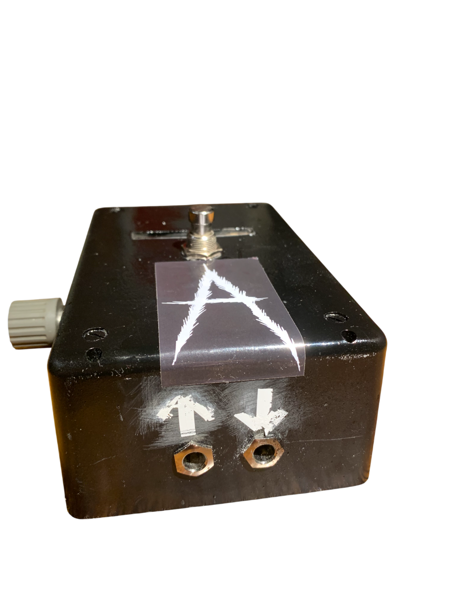
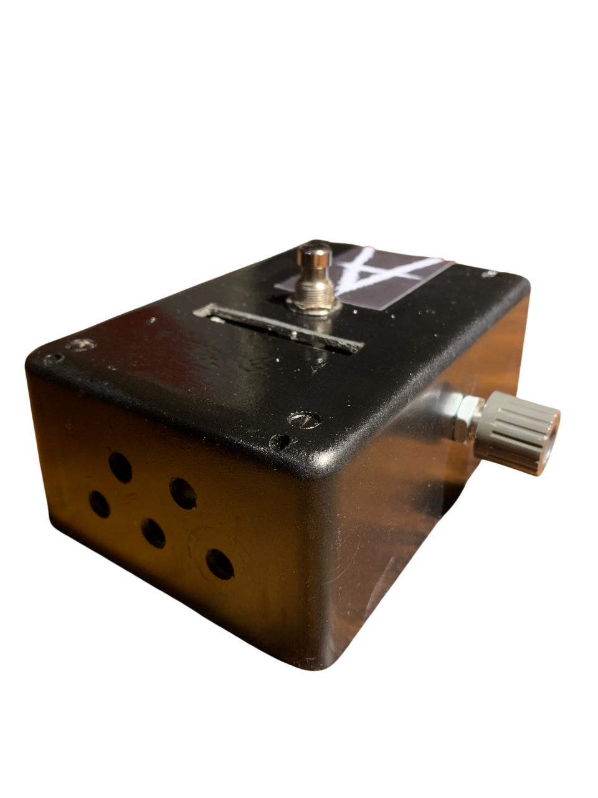
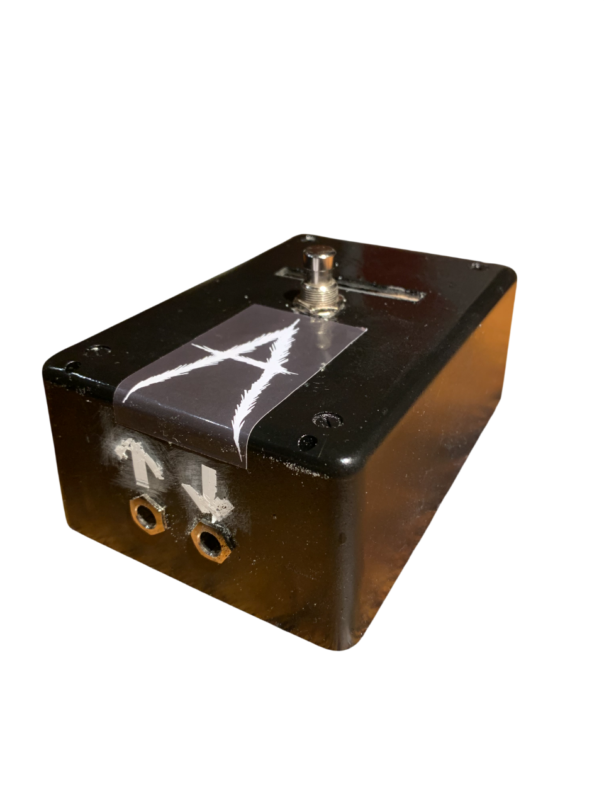

Galéria




Analógový gitarový efekt s transformátorovým zdvojením signálu. Agresívny, hutný a experimentálny zvuk pre extrémne hudobné žánre.
Objednať terazTento pedál vznikol ako maturitná práca zameraná na návrh, konštrukciu a testovanie analógového fuzz efektu. Inšpirovaný klasickými vintage obvodmi, ale upravený pre moderný agresívny zvuk.
Obsahuje viacstupňové tranzistorové zosilnenie, germániové diódy a dvojicu audio transformátorov, ktoré vytvárajú jedinečnú saturáciu a kompresiu.
Viacstupňové tranzistorové zapojenie vytvára hutný fuzz charakter.
Dodáva prirodzenú kompresiu a vintage charakter zvuku.
Možnosť ovplyvniť mieru saturácie a agresivity efektu.
Každý kus je ručne osadený a testovaný.
Vyplň formulár a budem ťa kontaktovať ohľadom dostupnosti alebo individuálnej výroby.